Helping people see Karrot as more than a marketplace.
Make people see Karrot as a local super app, not just a second-hand marketplace.
As of 2022, most people used Karrot for one thing: second-hand trading. Getting to anything else was hard, and people who did find another service often couldn’t find it again. This page covers two projects that tackled that from both ends: a task force that rethought the whole app, and the redesign of My Karrot and All Services that I led afterward.
I analysed the app’s structure and flows, and defined problems and proposals for Home, Neighborhood Life and My Karrot.
Proposals for Home, Search and All Services were all built.
I set the direction, planned and ran the experiments, and took part in every decision from start to finish.
My Karrot page views +50.4%. Karrot Pay sign-ups +253%.
Goal: look at Karrot as a whole forest, not tree by tree, and propose UX and UI that make it feel like a local super app.
Four product designers, a user researcher, a PM, the CPO and the CEO. I analysed the app’s overall structure and flows, and defined problems and proposals for Home, Neighborhood Life and My Karrot.
As of 2022, most people saw Karrot, and used it, as a place to trade second-hand goods. The main reason: finding and getting to anything else wasn’t easy. Even when people found another service, they often couldn’t find it again, and gradually dropped off.
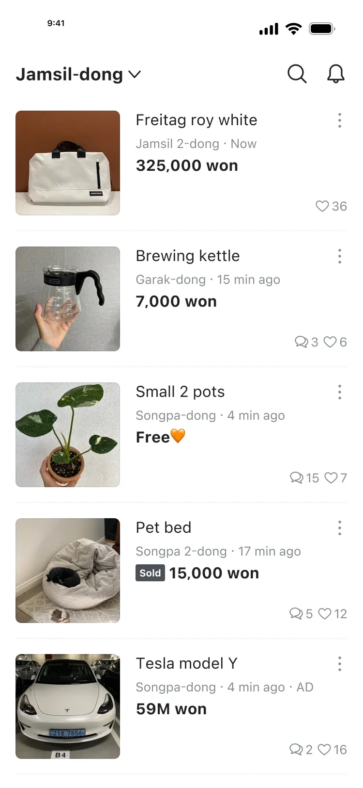
Home. Almost all second-hand listings.
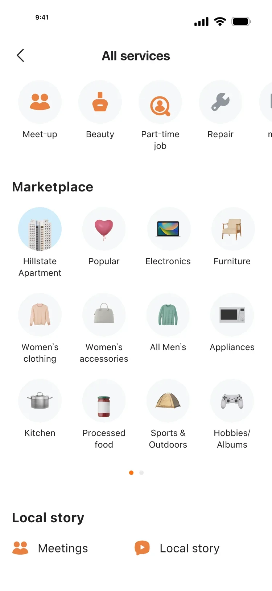
All Services. Built around second-hand categories.
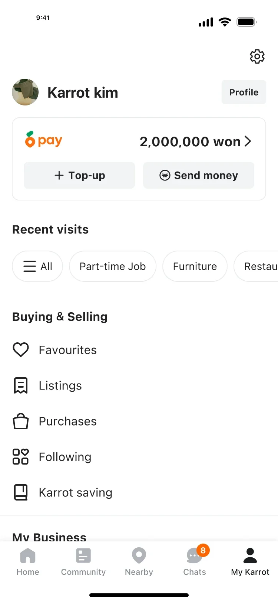
My Karrot. Mostly a record of buying and selling.
Karrot in 2022.
Through user research and an analysis of the app’s information architecture, we regrouped every service by how people actually perceive it, not by how Karrot had organised it.
People didn’t notice big changes to the tab structure, and kept using the app the way they knew. To reach a service, they used entry points or search that took them there straight from the content in front of them.
Karrot’s identity isn’t a utility app. It’s about discovering what’s happening in the neighbourhood. So the home screen itself had to work as a feed.
Within second-hand trading, let people discover other services naturally and seamlessly. Let them explore through content, not through a hierarchy of services.
Solution 1. Home. A personalised feed of all kinds of local content, built on second-hand listings, rather than a separate tab for second-hand. People could discover other content they might like between second-hand posts.
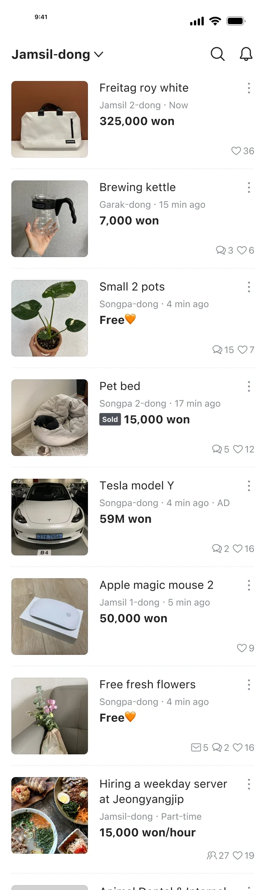
Until 2022. 88% second-hand content, with little personalisation.
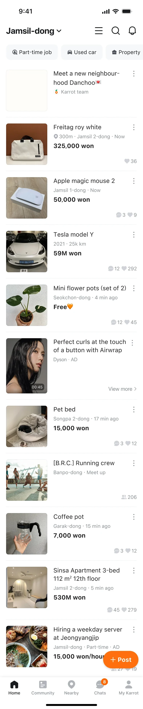
In 2024. Service shortcuts at the top, a personalised feed, and 70% second-hand content, mixed with used cars, video ads, meet-ups, property and part-time jobs.
Solution 2. Fixed entry points. Give every service a fixed entry point people can always reach, designed so it makes sense in a content-driven app.
Solution 3. Search as a way in. Most people who couldn’t find a service’s entry point were reaching service homes, like Jobs and Real Estate, through search. So we proposed helping people discover and understand services through content before, during and after a search.
The proposals for Home, Search and All Services, the key surfaces for being seen as a local super app, were all built into the product.
The task force didn’t reach solutions for My Karrot, the notification box or profiles, but I raised them as problems and they stayed on the list. After the task force ended, I took on a dual role and led the reorganisation myself. That’s Part 2.
Goal: help people learn fixed entry points to every service, and visit My Karrot to reach them. Reorganise the menus across all services.
My Karrot. CTR by section: most taps went to buying and selling.
All Services. Second-hand categories took most of the page.
Becoming a local super app meant reworking the whole journey, not just the home feed. We redesigned the structure of My Karrot as the core touchpoint.
To widen its role beyond trading history, we made the tab the main way into every service, and called it All. Page views dropped 6%, and feedback said many people couldn’t find My Karrot anymore. Interviews showed why: people expected a tab called All to be a sitemap, not a place for their own activity. Those who got used to the name, though, found it natural for the old My Karrot menus to live there. After two weeks, we concluded people couldn’t adapt to a new name that quickly.
−6% tab page views
The third tab affects how the whole app gets used, so we made tab page views a guardrail and ran a second experiment, keeping the original name, My Karrot. This time page views held, and we decided to roll it out.
No drop in page views. Rolled out.
Control. The original tab.
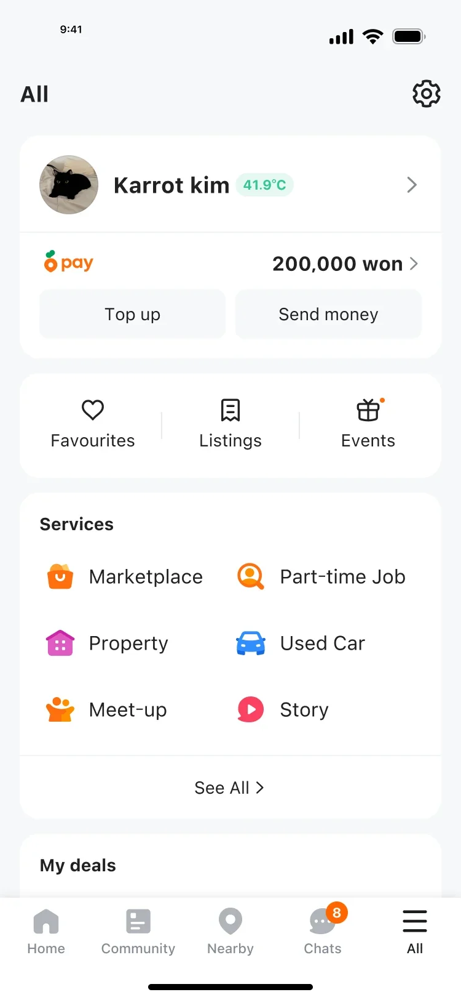
Experiment 1. Renamed All, with services in cards.
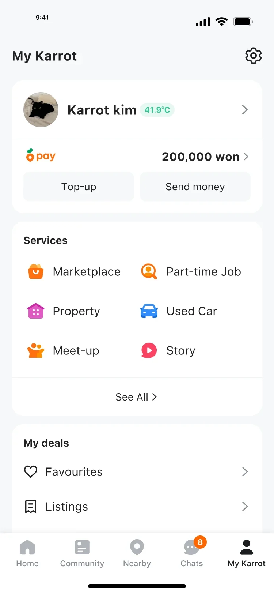
Experiment 2. Shipped The same cards, under the name My Karrot.
Features with very different purposes share one surface, so clear grouping matters. Cards make each section’s boundary easy to see at a glance.
Service entry points get more visual weight, with colour icons and a larger share of the screen.
Instead of mirroring the internal org structure, every menu was regrouped from the user’s point of view.
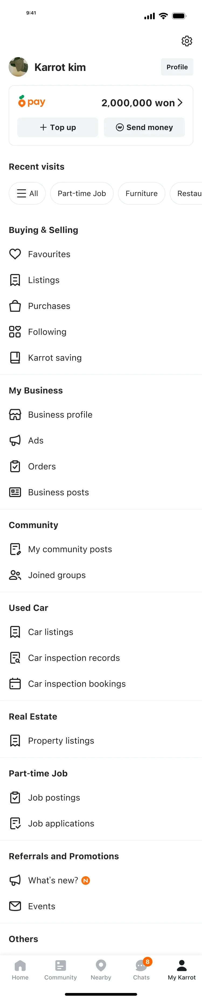
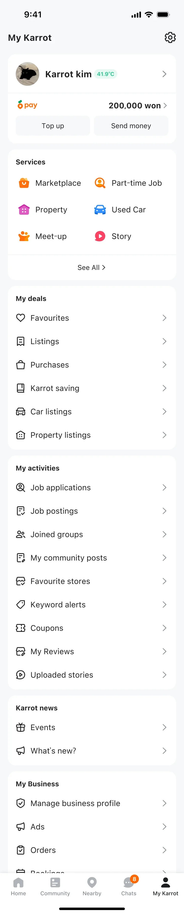
CTR by section, before and after the redesign.
Every service now has fixed ways in: the menu on Home opens All Services, and My Karrot shows the main services with a See All link to the rest.
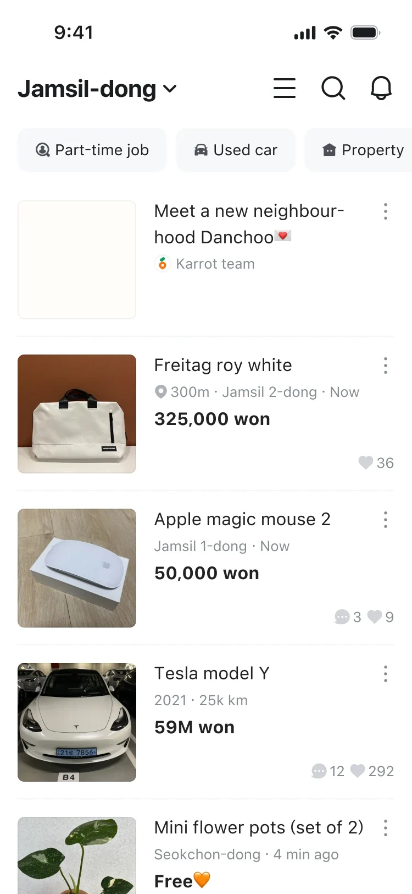
Home. The menu icon opens All Services.
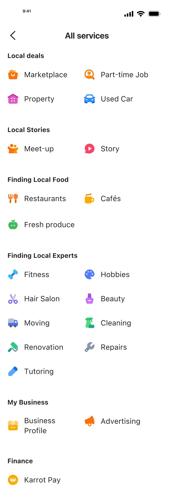
All Services. Every service, grouped by what people want to do.
My Karrot. The main services, with See All for the rest.
The second-hand categories had been surfaced in a way that didn’t match the service hierarchy. We moved Marketplace into the first level, next to the other services, to set a clearer hierarchy. Its categories now sit one tap deeper.
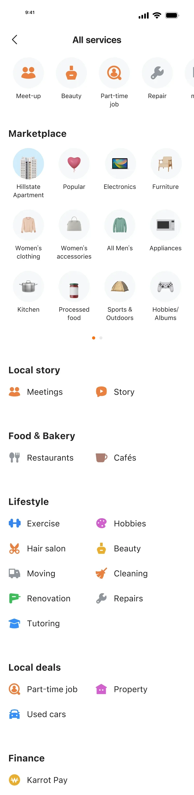
Before. Marketplace categories filled most of the page.
After. Marketplace sits with the other services.
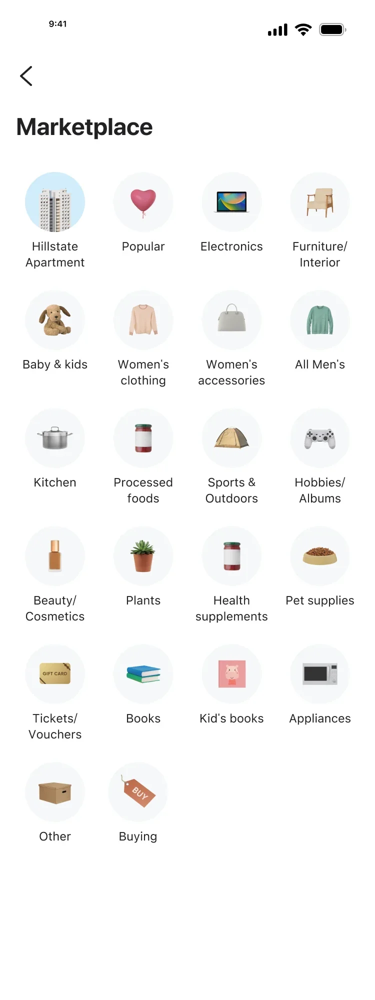
One tap deeper. The full set of second-hand categories.
After the redesign, people learned to reach a wider range of services through My Karrot. Page views and visitors across service entry points kept growing, and My Karrot became an effective surface for marketing and growth work.
Testing showed people didn’t notice a new tab structure. They reached services through entry points and search in the content in front of them.
Renaming My Karrot cost 6% of its page views in two weeks. The guardrail in the second test let us keep the gains without that cost.
Regrouping menus by what people do, rather than which team owns them, is what made the services easy to find.
My Karrot was left open when the task force ended. Keeping it on the list is what made Part 2 possible.